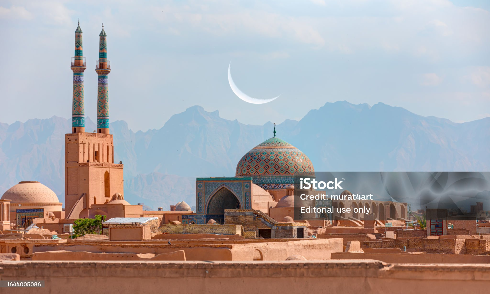
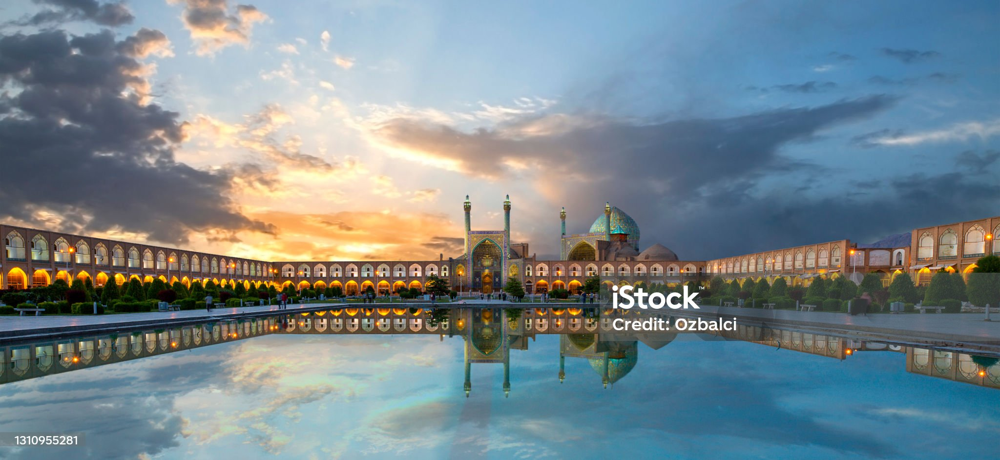
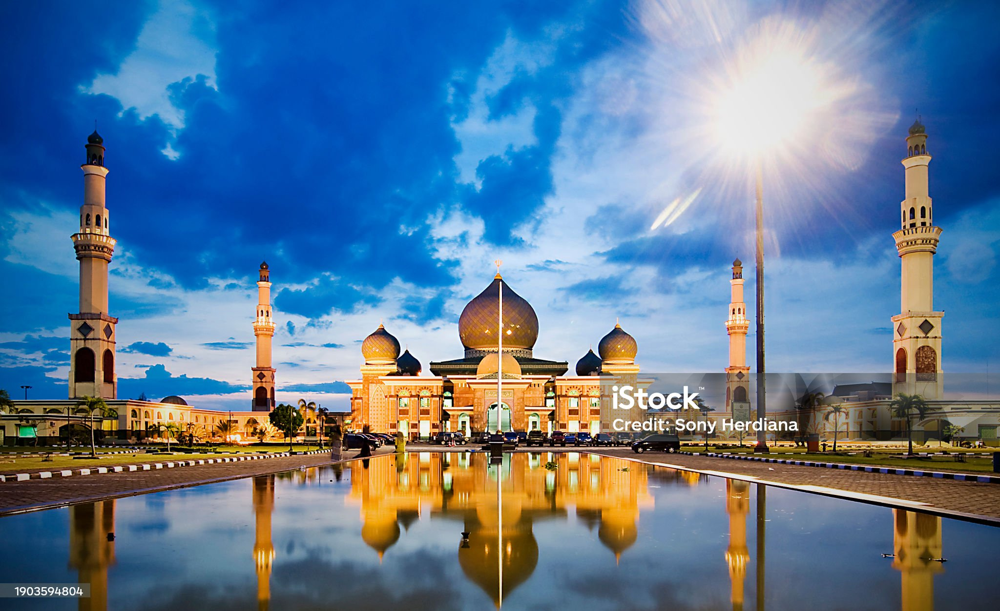

YAZD OF IRAN
Yazd is a city in the Central District of Yazd County, Yazd province, Iran, serving as capital of the
province, the county, and the district.[6] Yazd is 270 km (170 mi) southeast of Isfahan. At the 2016
census, its population was 529,673.[2] Since 2017, the historical city of Yazd is recognized as a
World Heritage Site by UNESCO.[7]

ISFHANNAN OF IRAN
Isfahan or Esfahan Persia is a major city in the Central District of Isfahan County, Isfahan
province, Iran. It is the capital of the province, the county, and the district.[6] It is located
440 kilometres (270 miles) south of Tehran.[7] The city has a population of approximately
2,220,000,[8] making it the third-most populous city in Iran, after Tehran and Mashhad, and the

NUUR MOSQUE
This is a list of notable mosques in China. A mosque is a place of worship for followers of the
religion of Islam. The first mosque in China was the Huaisheng Mosque in Guangzhou, built during the
Tang dynasty in 627 CE. In of 2014 there were 39,135 mosques in China,[1][2] in 2009 an estimated
25,000 of these were in Xinjiang, a north-west autonomous region,